序言
在很久以前，Spring的配置文件是基于XML的。它的名字就是applicationContext.xml，没错，就只有这一个xml文件。
它里面配置了所有的东西。但是数据库信息通常会单独拿出来，放入一个properties文件，通常叫db.properties。
后来觉着一个xml里的东西实在太多了，就按功能拆分成几个独立的xml。
spring-dao.xml是dao层，spring-service.xml是service层，spring-tx.xml是事务相关，dispatcher-servlet.xml是web相关。
这么多的xml怎么办呢？很简单，就是在applicationContext.xml里都引用它们即可。
随着JDK在1.5加入了对注解的支持，Spring也慢慢的向注解转化。直至后来一个xml都不剩，全部变为注解，连web.xml都没有了。
是xml不行了，还是注解太牛X了，其实它们是等价的，连官网上都说它们一摸一样，故而不做推荐，让用户根据实际情况自己选择。
不过，最终历史还是抛弃了XML，肯定是多方面的原因，可能如下：
1）人们厌倦了XML，出现审美疲劳
2）试用了注解很爽，一发不可收拾
3）注解代表着先进的生产力，极大提升了效率
4）XML拖沓累赘，注解清爽干脆
5）大家都觉得使用注解比使用XML更牛B。
于是乎，一个辉煌的新时代碾压了一个曾经辉煌的曾经的新时代。
呵呵，历史是什么，就是个车轮。一切皆可碾压。
总之，既有实际实践问题，又有思想意识问题，说不清，道不明。
随着SpringBoot的横空出世，配置文件的概念又发了变化。
SpringBoot强调自动配置（也叫自动装配），所以配置对它来说很重要。
配置文件属于配置的一部分，自然也变得非常重要，于是yml就应势站了起来。
yml从未像现在这样流行，成了新时代的网红。
yml配置文件的格式
每种新事物的流行，总会有它比旧事物更好的地方。
作为Java界配置文件鼻祖，非properties文件莫属，它里面的格式就不用再举例了吧。
它是一维非结构化的，一行一个，写多了容易乱。
而yml文件是二维结构化的，有严格的缩进，结果就是层次分明，非常清晰。
而且，常用的配置都能得到支持，这就是它的优势，所以就流行起来了。
一、List配置格式，如下图01：
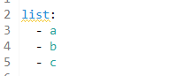
二、Map配置格式，如下图02：
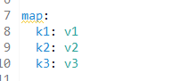
三、List套List格式，如下图03：
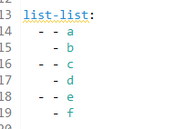
四、List套Map格式，如下图04：
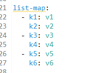
五、Map套Map格式，如下图05：
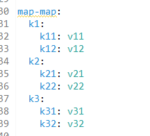
六、Map套List格式，如下图06：
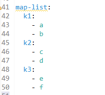
虽然有些嵌套可能并不适用，这里只是说明yml支持这样的嵌套，如果愿意的话，嵌套层次还可以更深。
yml配置文件内容的存储
大家都知道SpringBoot是由Spring发展而来的，Spring里是有Environment这个概念的。
所有的环境变量、系统属性、配置文件内容都会放进去。
通常的配置项都是一些key=value，就和properties文件是一样的。所以Environment底层也是这样实现的。
但到了SpringBoot中，配置文件变为yml了，是二维结构化的，根本没有办法直接用key=value这种形式表示。
但是，yml配置文件的内容还必须要放入到Environment中去。那怎么办呢？看来二者必须要修改其一了。
由于Spring已经很多年了，它里面的很多概念都已经固化下来了，包括Environment内部的结构与实现。
因此，最终选择yml去适配Environment，把二维结构化变为一维非结构化，即把有层次的变为简单的key=value形式。
这在编程里有一个专门的术语，叫扁平化。其实人员管理里面也有扁平化。
具体规则也非常简单，把父子关系用点号（.）表示，把列表索引用中括号（[]）表示。
把刚刚的配置内容输出来看看，如下图070809：
这样就完成了扁平化，就可以存入到Environment中去了。
等号（=）前面的就是key，后面的就是值。
直接粗暴的使用yml配置文件内容
由于yml配置文件内容最终会进入Environment中，所以就等于直接粗暴的从Environment中读取值。
此时，key必须要写成上面那样子，否则取不到值。
一、直接从Environment中读取，如下图10：
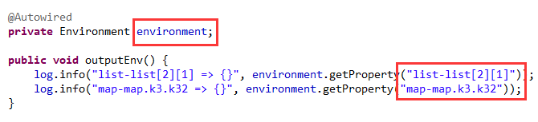
结果输出如下图11：
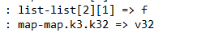
二、使用@Value注解，如下图12：
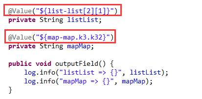
结果输出如下图13：
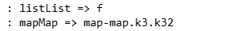
这就是简单粗暴的方式，除了看上去不美观之外，还把yml的结构化特征给丢失了。
其实，还有一个比较严重的问题，就是只能获取到最终key对应的单个值，如果想获取一个List或Map作为返回值，是不行的。
优雅的使用yml配置文件内容
key=value这种形式其实就是个Map，而Map其实和Java Bean差的并不多，只不过Bean中是属性名和属性值罢了。
Map套Map就等于Bean套Bean，这样无论结构形式还是语义表达都能很完美的映射过来。
且Bean是强类型的，属性名和属性类型一目了然，比Map强多了。
所以yml配置文件里的内容可以映射为Java里的Bean，这就是SpringBoot推荐的优雅的使用方式。
这里的核心问题就是，yml里的配置项要和Bean中的属性名称和类型对应好，不然会出问题。
下面请看一个示例，自己瞎编了一个游泳比赛的得分和奖品的配置。
含有一等奖、二等奖、三等奖的得分区间，和它们分别对应的奖品名称和数量。
如下图14：
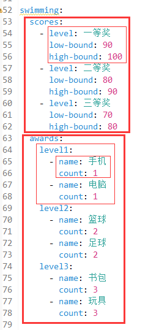
可以看到scores对应的是一个列表，它有三个元素，每个元素都有level、lowBound、highBound三个属性。
awards对应一个Map，它有三个key，分别是level1、level2、level3，每个key对应的值又是一个列表。
且列表都含有两个元素，且每个元素都有name、count两个属性。
如果这个明白了，下面请看它对应的Bean，如下图15：
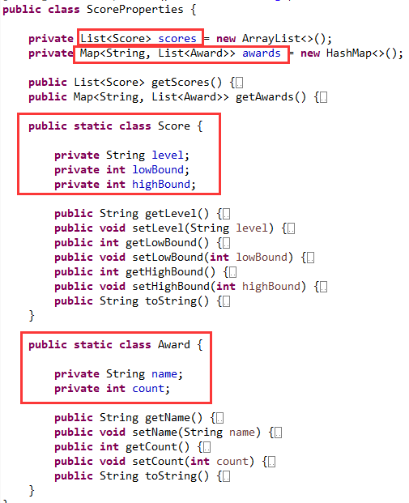
Score和Award是两个静态内部类。一个有三个属性，一个有两个属性。
ScoreProperties类中有两个属性，一个是scores，类型是List<Score>。
一个是awards，类型是Map<String, List<Award>>。
可以看出，它们和yml的结构是完全吻合的。没有难度吧。
为了使它用起来更优雅，SpringBoot定义了两个注解来助它一臂之力。
首先，在Bean上标上@ConfigurationProperties，表示它是一个“配置属性”。
如下图16:
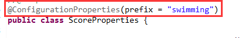
其次，在另一个类上使用@EnableConfigurationProperties注解将其引入。
如下图17：
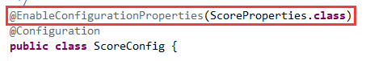
经过这两步，这个“配置属性”类就已经被注册到容器里了，就变成一个普通的bean了。
这样就可以把它注入到需要的地方，如下图18：
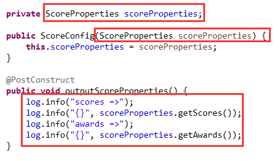
使用的是构造方法注入，并输出一下它的值，看看和yml中配置的是否一样。
结果如下图19：
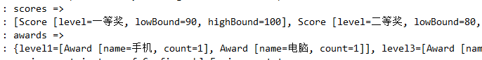
可以看到，完全没有问题。这就是SpringBoot推荐的方式。
SpringBoot框架内部的源码都是这样用的。
既然“配置属性”类最后注册了bean定义，那可不可用常规的bean定义注册方式呢？
试试就知道了，如下图20：
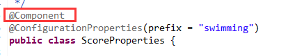
可以看出，这里使用的@Component注解。
这样的话，就不再需要另一个注解引入了，把它注释掉，如下图21：
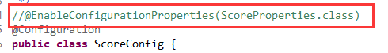
其它的都保持不变。然后进行测试，发现完全可以。
不过还是推荐使用SpringBoot指定的方式，因为SpringBoot可以对这种方式进行特殊的优化处理。
比如使用@Validated进行验证。还可以把@NestedConfigurationProperty注解标到嵌套的字段上。
这样不会影响属性值的绑定，但是可以让SpringBoot给你在IDE中进行智能提示。
不然在没有源码的情况下，根本不知道“配置属性”类的结构以及属性名和属性类型。
>>> 热门文章集锦 <<<
爸爸又给Spring MVC生了个弟弟叫Spring WebFlux
【面试】吃透了这些Redis知识点，面试官一定觉得你很NB（干货 | 建议珍藏）
【面试】如果你这样回答“什么是线程安全”，面试官都会对你刮目相看（建议珍藏）
【面试】迄今为止把同步/异步/阻塞/非阻塞/BIO/NIO/AIO讲的这么清楚的好文章（快快珍藏）
【面试】一篇文章帮你彻底搞清楚“I/O多路复用”和“异步I/O”的前世今生（深度好文，建议珍藏）
>>> 品Spring系列文章 <<<
品Spring：SpringBoot和Spring到底有没有本质的不同？
品Spring：SpringBoot轻松取胜bean定义注册的“第一阶段”
品Spring：SpringBoot发起bean定义注册的“二次攻坚战”
品Spring：注解之王@Configuration和它的一众“小弟们”
品Spring：对@PostConstruct和@PreDestroy注解的处理方法
品Spring：对@Autowired和@Value注解的处理方法
品Spring：真没想到，三十步才能完成一个bean实例的创建
品Spring：关于@Scheduled定时任务的思考与探索，结果尴尬了
作者是工作超过10年的码农，现在任架构师。喜欢研究技术，崇尚简单快乐。追求以通俗易懂的语言解说技术，希望所有的读者都能看懂并记住。下面是公众号的二维码，欢迎关注！